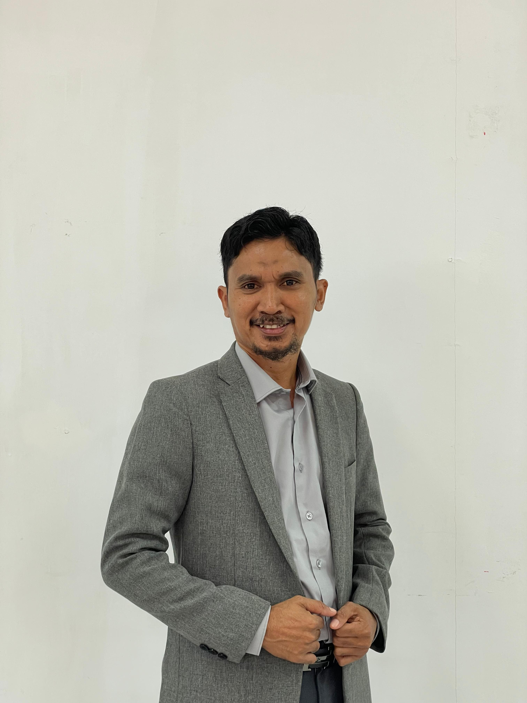
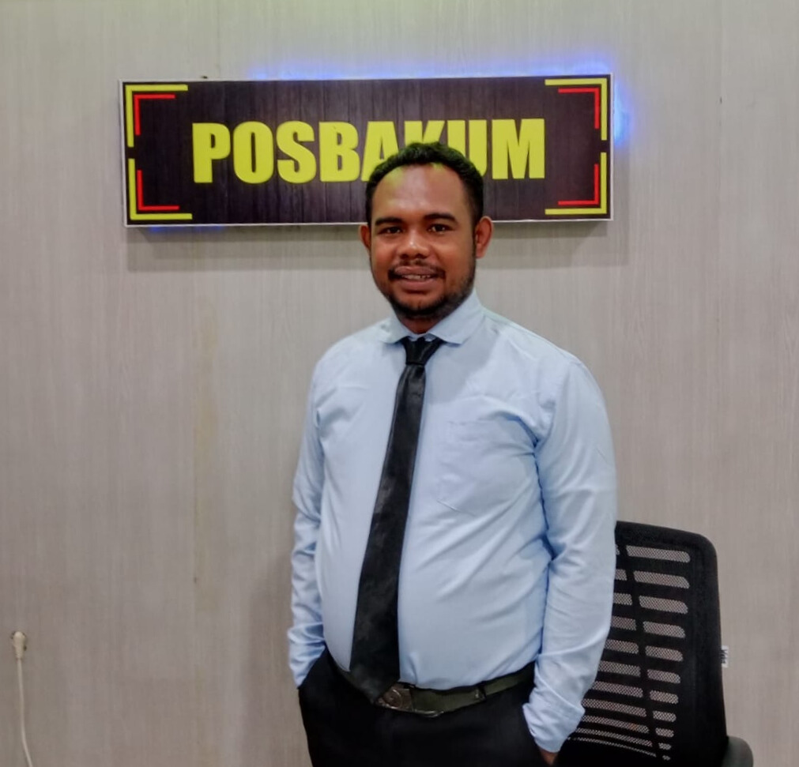
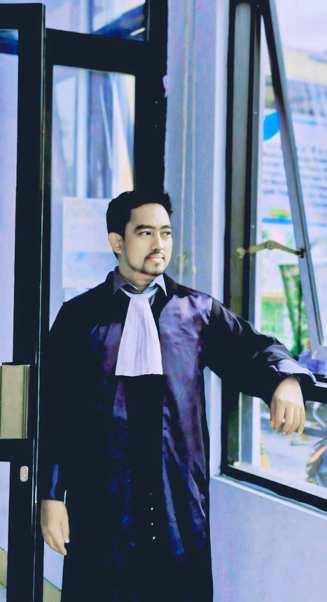

Adv. Malik Raudhi Tuasamu, SH. I., CPM., CPL
..........
Tim Pengacara YLBH

Adv. Rahmat Sandi Tatisina, S.H
Koordinator YLBH Cabang Seram Bagian Barat
Adv. Ainul Chasanah, SH., MH.
Pengurus Divisi Branding dan Kreatif

Adv. Rais Mahu, SH
Paralegal & Direktur Seram Post
Adv. Iftin Yuninda Hart
Pengurus Divisi Advokasi, Litigasi, Riset, dan Kajian Hukum
Adv. Alimin Maruapey, SH
Bendahara Umum YLBH
Adv. Wahyuni Boeng S.H
Pengurus Bagian Staf Legal

Adv. Rifhaldi Rahman
Pengurus Divisi Advokasi, Litigasi, Riset, dan Kajian Hukum
Adv. Fatima Izayani Tuanaya, S.H
Legal officer staff di YLBH Bakti Untuk Negeri cabang Masohi Paralegal